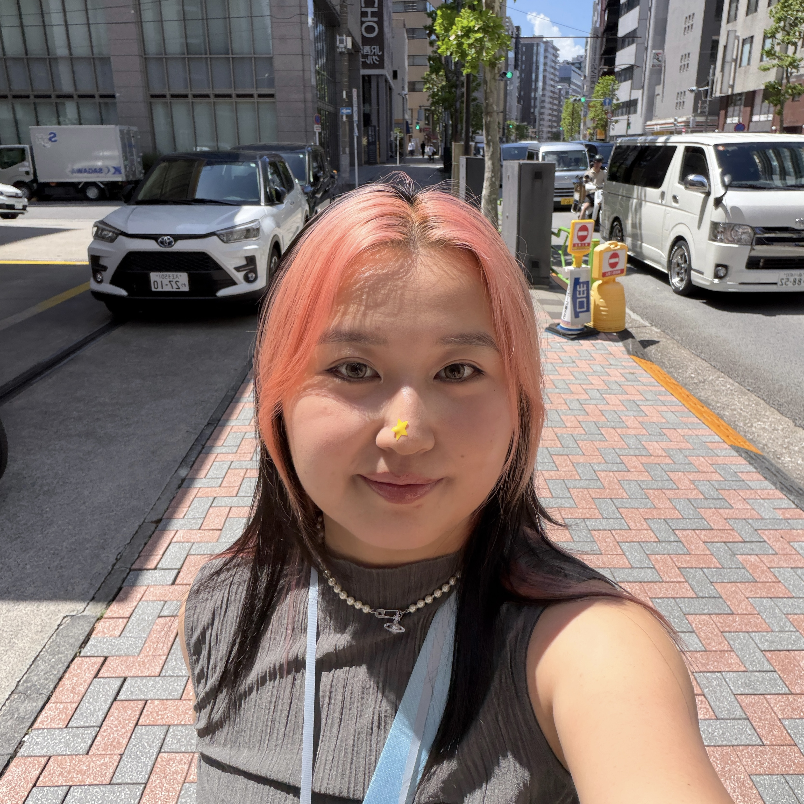
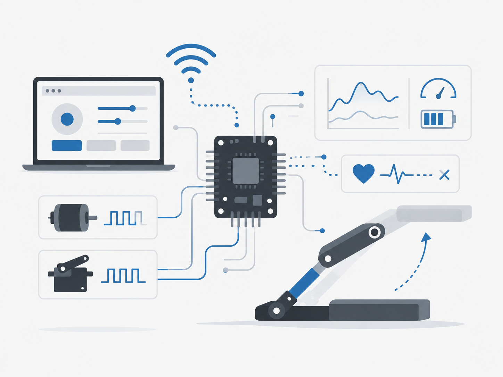

Education
UIUC
MCS · Expected May 2028
B.S. Computer Engineering
· May 2026
Hello, I am
Computer Engineering Graduate & Computer Science Student
I build embedded systems, low-level software, and GPU-accelerated programs.
See my workA little background

I am a Master of Computer Science student at the University of Illinois Urbana-Champaign. My work focuses on embedded software, firmware, FPGA systems, and hardware-software integration.
UIUC
MCS · Expected May 2028
B.S. Computer Engineering
· May 2026
C/C++, CUDA, Python, Verilog, Linux, and Assembly
Embedded software, firmware, FPGA, communication protocols, and hardware-software integration
Selected work

C++, Python, ESP32
A Wi-Fi controlled combat robot with motor control, telemetry, and a hardware failsafe.
My focus
Project demo
This video demonstrates the BattleBot's wireless controls, movement, lift mechanism, and system testing.
C++, Python, ESP32 · Team Lead
I built ESP32 firmware for Wi-Fi web-based robot control, including PWM output for two DC motors and three servo actuators. The system includes a heartbeat failsafe that stops the drive outputs within 580 ms of signal loss and INA219 telemetry for current and voltage monitoring. The robot reached a 0.706 m/s drive speed, lifted 2 lb in 0.76 seconds, and ran continuously for two minutes.
View lab report ↗C, ESP32, Embedded Systems · Team Leader
I designed and programmed a two-legged self-balancing robot using an ESP32 and real-time feedback control loops. I applied control systems and embedded programming concepts to achieve dynamic stability and developed the firmware in C using Git-based version control. The project provided hands-on experience with hardware-software co-design, timing analysis, and system-level validation.
View project ↗SystemVerilog, VHDL · Team Leader
I reconstructed the legacy Apple ][ architecture on an Intel DE10-Lite FPGA by translating system-level specifications into RTL hardware. I migrated the memory subsystem from off-chip SRAM to on-chip block RAM to improve latency and synchronization. The project included FPGA design flow, synthesis, and timing analysis.
View project ↗